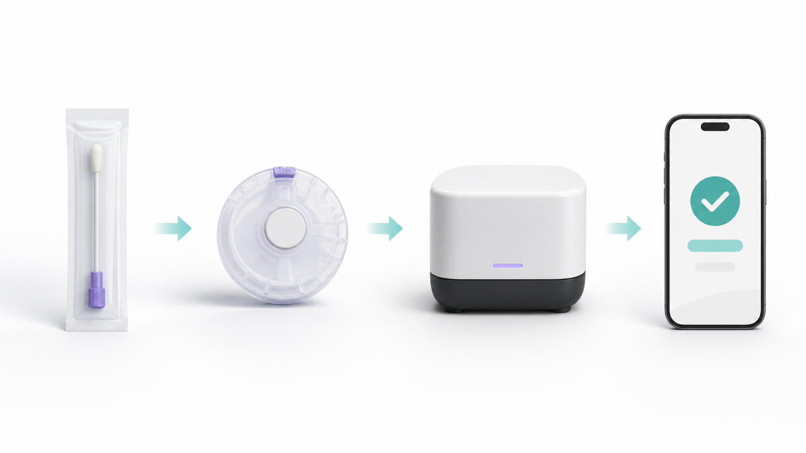
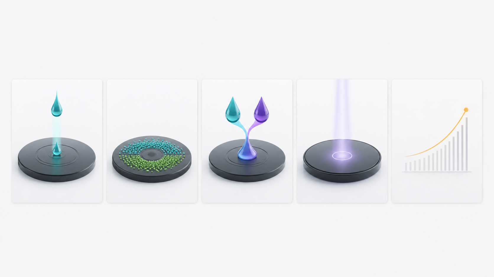

Variable sample biology
Dilution, debris, viscosity, and collection conditions can change the sample before measurement begins.

CLAIR by MicroCD Labs
CLAIR is an in-development centrifugal microfluidic platform designed to standardize sample preparation, fluid handling, assay timing, and smartphone optical readout in one cartridge-led workflow.
Development boundary: CLAIR is not for sale or clinical use. Analytical performance, workflow timing, and clinical utility remain to be established for each panel.
The development problem
Dilution, debris, viscosity, and collection conditions can change the sample before measurement begins.
Pipetting, timing, mixing, and transfer steps introduce operator-dependent variability.
Phone position, illumination, focus, and endpoint timing can make quantitative interpretation less reproducible.
Platform architecture
The current engineering concept assigns sample preparation, reaction control, imaging, and interpretation to defined parts of one workflow.


Initial development focus
The first planned panel is intended to study the clinical gray zone between routine monitoring and escalation to a more comprehensive dental workup.
These markers are candidates for product development. Panel composition, thresholds, performance, and clinical interpretation require analytical and clinical validation.
Evidence discipline
MicroCD Labs is translating lab-on-disc, assay, imaging, and kinetic-analysis experience into a reproducible veterinary product workflow.
Patent filing note: U.S. provisional application 64/126,200 was received August 5, 2026 for Portable Centrifugal Diagnostic Platform with Mobile-Device Optical and Kinetic Assay Analysis. A provisional filing is not an issued patent or a determination of patentability.
Build the product evidence
We welcome non-confidential conversations with veterinary clinics, assay-development specialists, cartridge and manufacturing partners, and investors aligned with disciplined product validation.